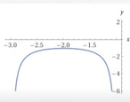
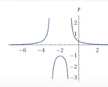

FROM THE MAKERS OF WOLFRAM LANGUAGE AND MATHEMATICA
WolframAlpha
✹ NATURAL LANGUAGE∫∑ MATH INPUT
▦ EXTENDED KEYBOARD▦ EXAMPLES↥ UPLOAD⤨ RANDOM
✹ Wolfram|Alpha does not yet support Chinese.
Wolfram|Alpha 不支持中文。
Wolfram|Alpha 不支持中文。
Interpreting as: 1/(x^2 + 4x + 3)
Input
partial fractions
1x² + 4x + 3
Result ☑ Step-by-step solution
1
x² + 4x + 3 = 1⁄2 (x + 1) − 1⁄2 (x + 3)
x² + 4x + 3 = 1⁄2 (x + 1) − 1⁄2 (x + 3)
Plot


Alternate form
1x² + 4x + 3
1(x + 1)(x + 3)
1(x + 1)(x + 3)
⇩ Download PagePOWERED BY THE WOLFRAM LANGUAGE
Assuming coffee | Use Starbucks coffee of the week instead
Assuming any type of coffee | Use coffee, brewed, espresso or instead
Assuming any type of carbonated beverage | Use carbonated beverage, cream or instead
Assuming any type of coffee | Use coffee, brewed, espresso or instead
Assuming any type of carbonated beverage | Use carbonated beverage, cream or instead
Input interpretation
coffee amount 24 oz (ounces) caffeine
carbonated beverage amount 24 oz (ounces) caffeine
carbonated beverage amount 24 oz (ounces) caffeine
Result
481 mg (milligrams)
Unit conversion ☑ Step-by-step solution
0.4815 grams
4.815 × 10−4 kg (kilograms)
7.431 grains
Physical properties
| mass | coffee | 680 grams |
| carbonated beverage | 680 grams | |
| total | 1.4 kg | |
| serving volume | coffee | 671 mL |
| carbonated beverage | 649 mL | |
| total | 1320 mL | |
| serving density | coffee | 1 g/cm³ |
| carbonated beverage | 1.1 g/cm³ |
▣ Sources ⇩ Download PagePOWERED BY THE WOLFRAM LANGUAGE
✉️ 👤 Have a question about using Wolfram|Alpha?
Contact Pro Premium Expert Support »
Contact Pro Premium Expert Support »
▢ Give us your feedback »